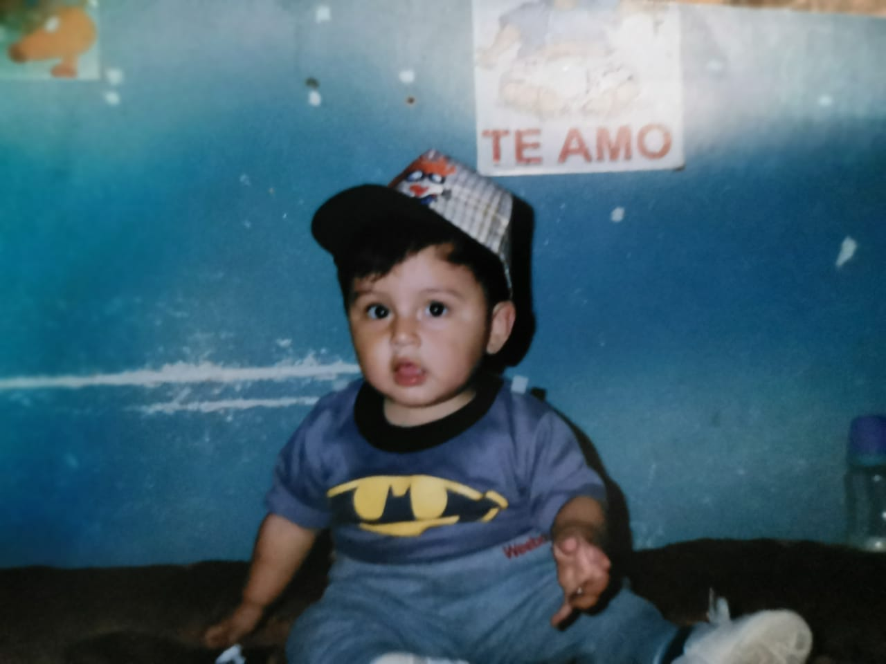
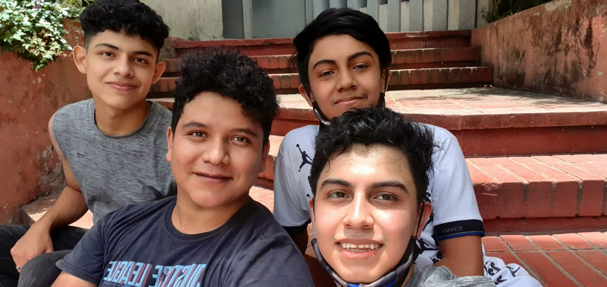

Curriculum personal
Mi nombre es: Isamir Alessandro Armas Cano
Mi fecha de nacimiento es: 4 de enero de 1999
 
Logros
- Graduarme de bachiller en computacion.
- Ingresar a la facultad de ingenieria.
- Aprender a manejar moto
Metas
- Ganar mis cursos en el semestre
- Graduarme de la facultad de ingenieria.
- Aprender a manejar carro
Valores
- Apredizaje.
- Colaboracion.
- Valoracion.
- Esfuerzo.
- Empatia.
- Felicidad.
- Gratitud.
- Perseverancia.
Aptitudes
- Empatia.
- Perseverancia.
- Honestidad.
- Contro de estres.
- Responsabilidad.
Objetivos en mi carrera
- Terminar mi carrera de ingenieria.
- Conseguir un trabajo y seguir estudiando.
- Ser auxiliar en algun curso.
- Entender de mejor forma la programacion.